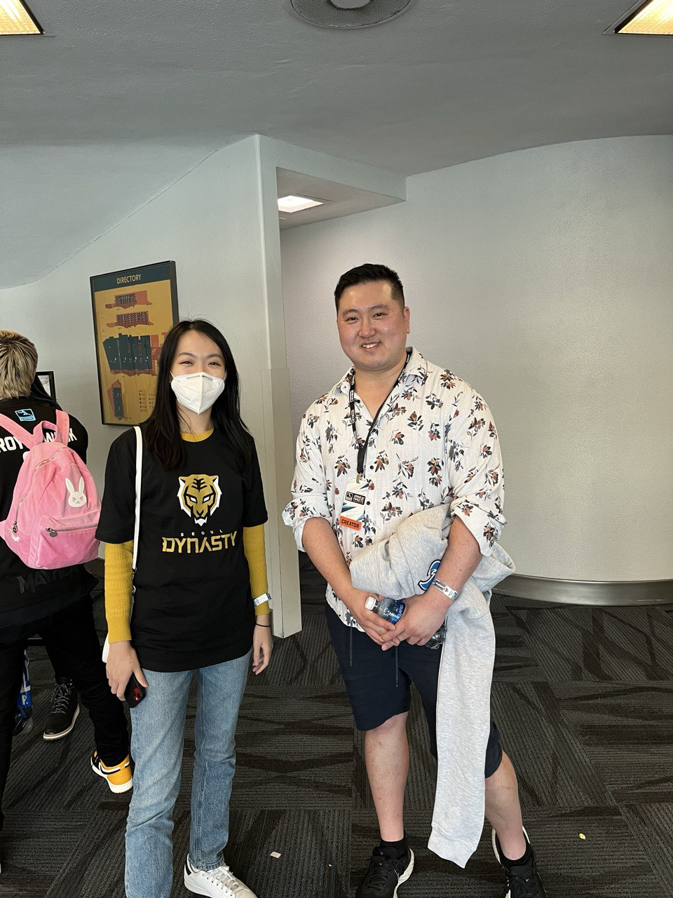
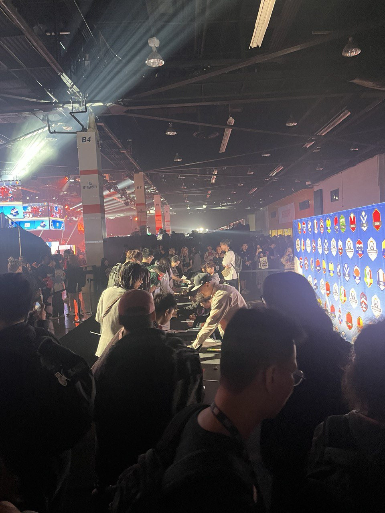

I am a passionate Overwatch player who loves diving into the game's dynamic gameplay and incredible hero designs. Watching professional games online and cheering on my favorite teams is a thrill, and attending live events like BlizzCon for the Overwatch World Cup is a dream come true. The energy and excitement of these events inspire me as both a player and a fan of the competitive gaming scene.

